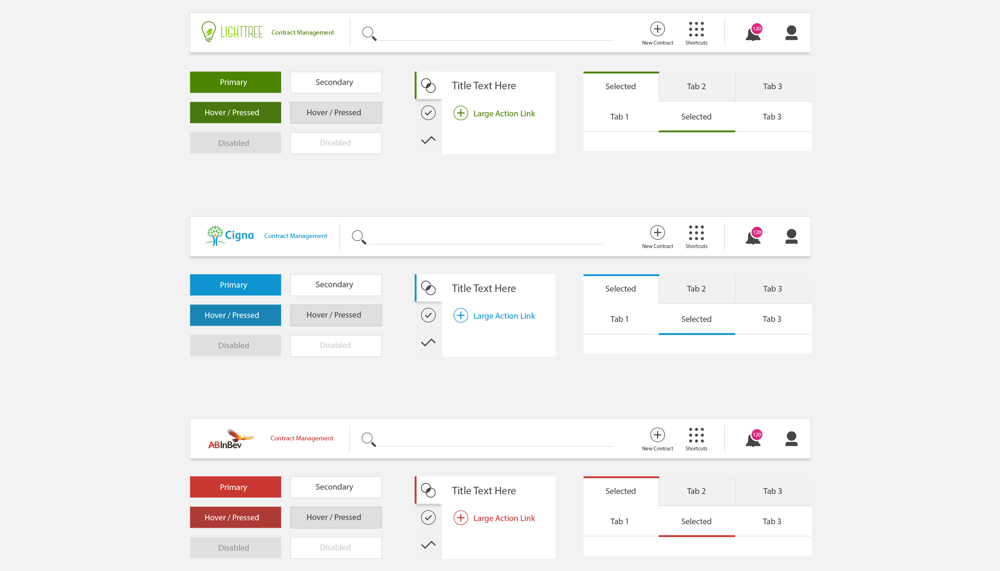
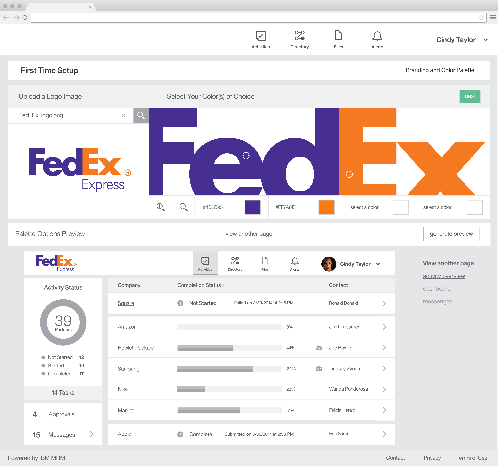
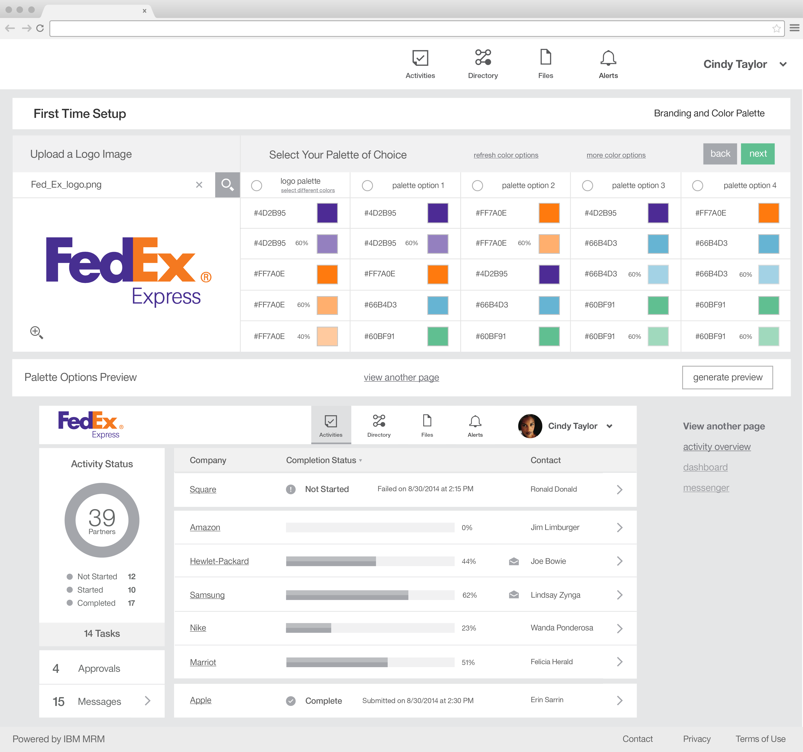
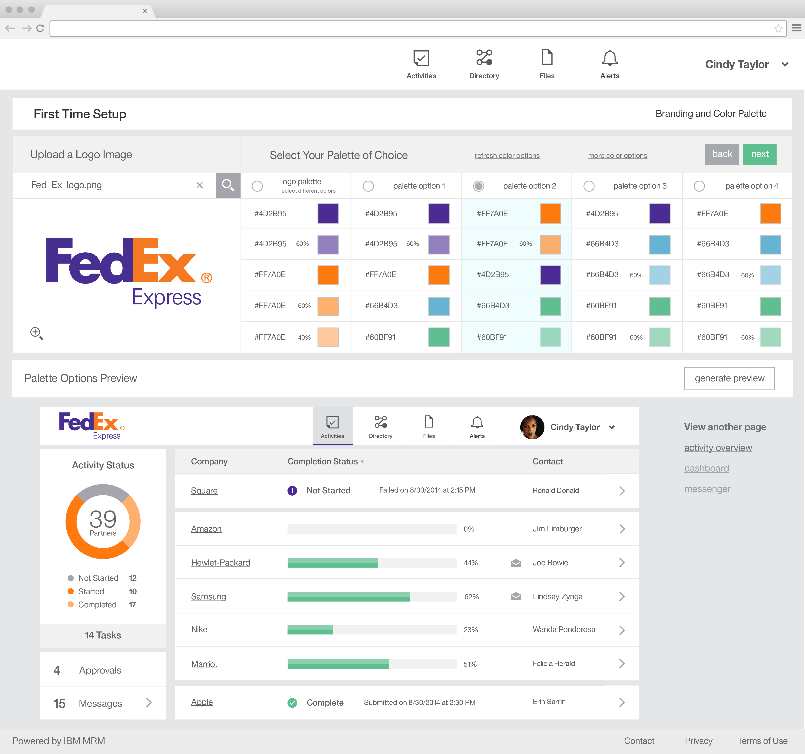
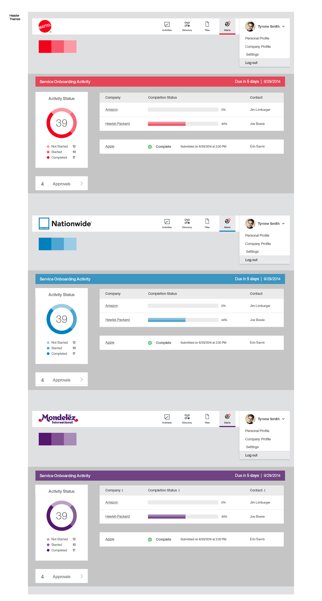
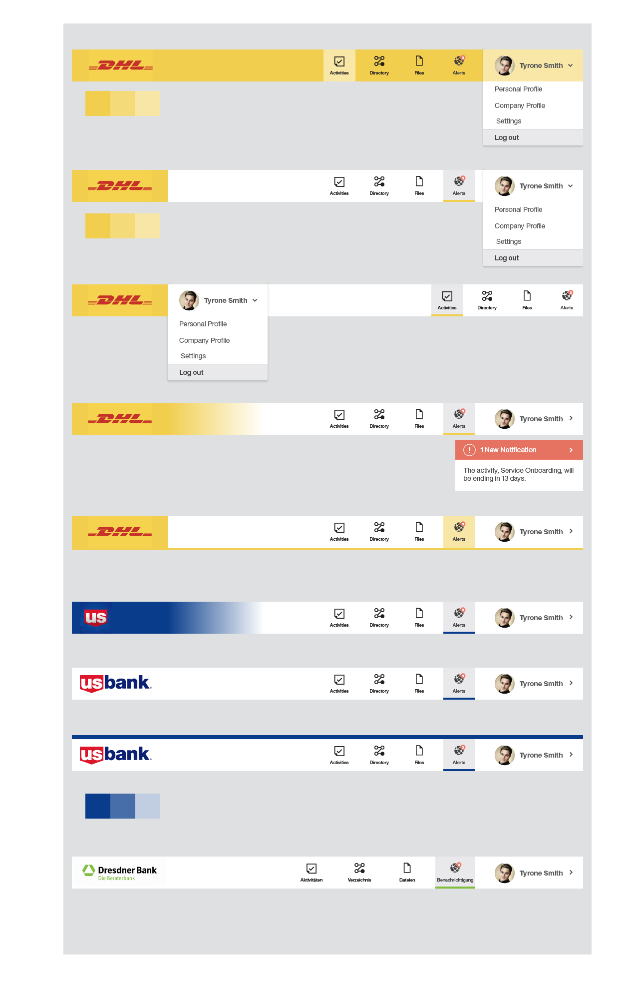

TL

Throughout most of the projects I worked on companies wanted to brand the UI so it looked as if it was one of their products and wasn’t from IBM. The main issue was the visual design of the product. When customer would log in to Emptoris or PEM, they wouldn’t trust it because it looked radically different. With numerous acquisitions and no design direction each product would have it’s own colors as well as customer’s colors even if they contrasted each other.

To solve this problem, I lead the design team in my PEM project to standardize this ‘brand-able’ visual design.

As a part of this challenge, we wanted to be wary of any accessibility standards and allow flexibility to customers if they want to change their colors and logo.

Our solution was to greyscale the entire visual design and incorporated subtle hints of color to emphasize our customers brand and message. Customers then could keep our default IBM brand colors or configure them to suit their company. We kept status colors and made sure icon colors were kept to a minimum.


